Aprender haciendo, sin perder de vista el porqué
Esta unidad está organizada en dos trabajos distintos sobre un equipo de sobremesa: desmontarlo hasta dejar el chasis prácticamente vacío y reconstruirlo hasta conseguir un arranque correcto.
01 · Desmontaje completo
Identificar, fotografiar, etiquetar, desconectar y extraer piezas en un orden controlado, evitando pérdida de datos y desperfectos.
Ir al desmontaje02 · Montaje completo
Preparar caja y placa, fijar CPU y refrigeración, instalar RAM y unidades, conectar el cableado y comprobar POST/UEFI.
Ir al montajeMapa del contenido de las diapositivas
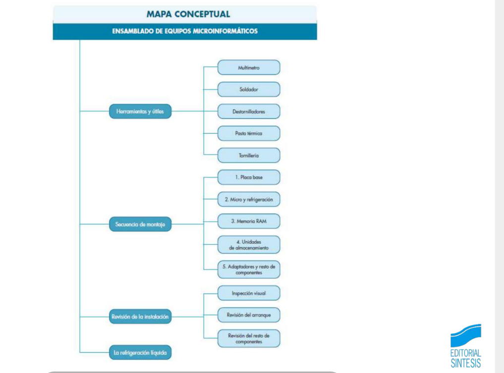
Material visual aportado para la UT06: mapa general de ensamblado.
Seguridad, entorno y protección de datos
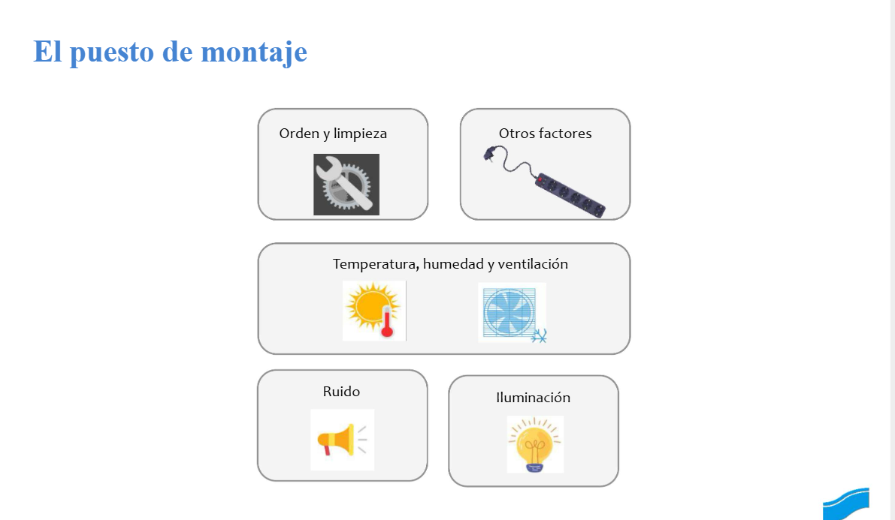
Seguridad eléctrica
Apaga el equipo, desconecta alimentación y periféricos y verifica la ausencia de alimentación antes de abrirlo. No manipules componentes con el equipo enchufado. No abras la fuente de alimentación: sus condensadores pueden mantener cargas peligrosas incluso desenchufada.
Electricidad estática (ESD)
Trabaja en superficie apropiada y utiliza pulsera y alfombrilla ESD correctamente conectadas a un punto de tierra adecuado según el protocolo del taller. Sujeta placas por sus bordes; evita contactos, pistas y pines.
Protección de datos
Antes de desmontar, solicita autorización y comprueba copias de seguridad. Identifica SSD/HDD y su propietario. No formatees, inicialices ni borres unidades como parte de esta práctica.
Puesto y prevención
Mesa estable, seca, despejada, iluminada y ventilada; salidas de emergencia libres. Separa tornillos, evita líquidos y reduce polvo. Nunca fuerces conectores ni piezas.
Lista de apertura del trabajo
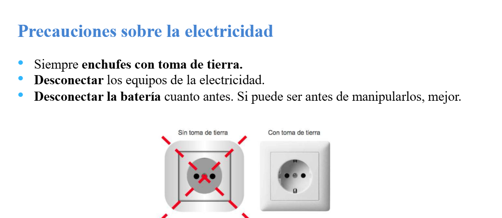
Herramientas y materiales necesarios
Identifica la función de cada herramienta antes de utilizarla. No todas son necesarias en todos los montajes.
Herramientas básicas
Destornilladores Phillips y de precisión, pinzas, recipientes etiquetados para tornillos, linterna y brocha antiestática adecuada para electrónica.
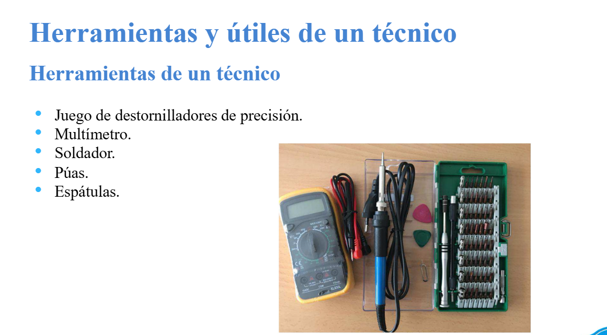
Consumibles y otros útiles
Pasta térmica compatible, paños sin pelusa, alcohol isopropílico adecuado para electrónica, bridas, tornillería, separadores y bolsas antiestáticas. Multímetro solo cuando la práctica lo requiera y bajo supervisión.
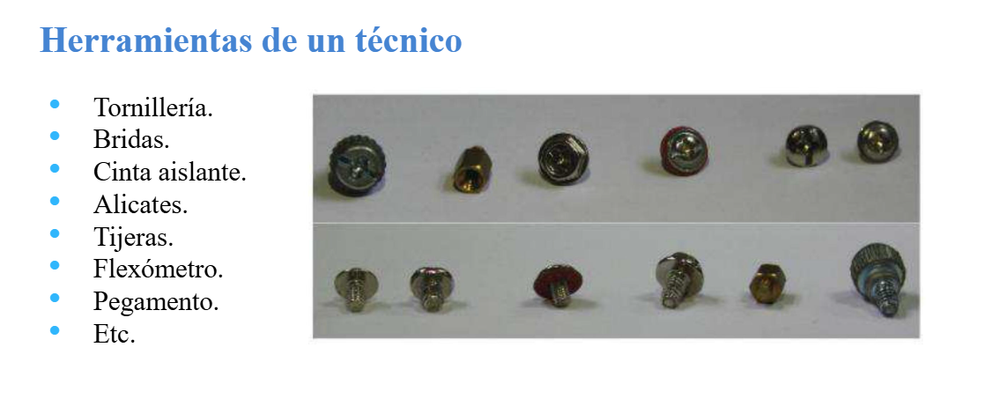
¿Para qué sirven las pinzas, la pasta térmica y las bridas?
Pinzas: recuperar piezas pequeñas sin rozar circuitos. Pasta térmica: rellenar pequeñas irregularidades entre CPU y disipador, no sustituir la presión de montaje. Bridas: ordenar el cableado sin tensarlo ni bloquear ventiladores.
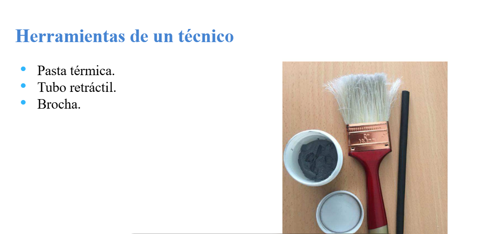
Desmontaje completo del equipo
Objetivo: dejar el equipo desensamblado, con cada componente identificado, protegido y preparado para su posterior montaje.
Regla del taller: desmontar no consiste en tirar de piezas; consiste en comprender cómo están fijadas y conectadas. Antes de retirar algo, documenta su posición.
Resultado esperado
Chasis vacío (salvo elementos no desmontables o excluidos por el profesor), fuente extraída sin abrir, placa base retirada, CPU/RAM/SSD identificados y almacenados de forma segura, todos los tornillos clasificados, y fotografías o croquis de referencia.
Montaje completo y puesta en marcha
Objetivo: reconstruir un ordenador estable, con conexiones correctas y preparado para realizar las pruebas iniciales.
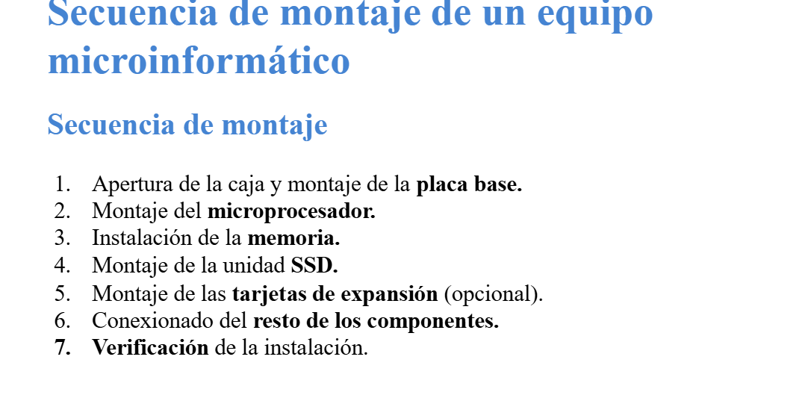
Imágenes de referencia para las fases críticas
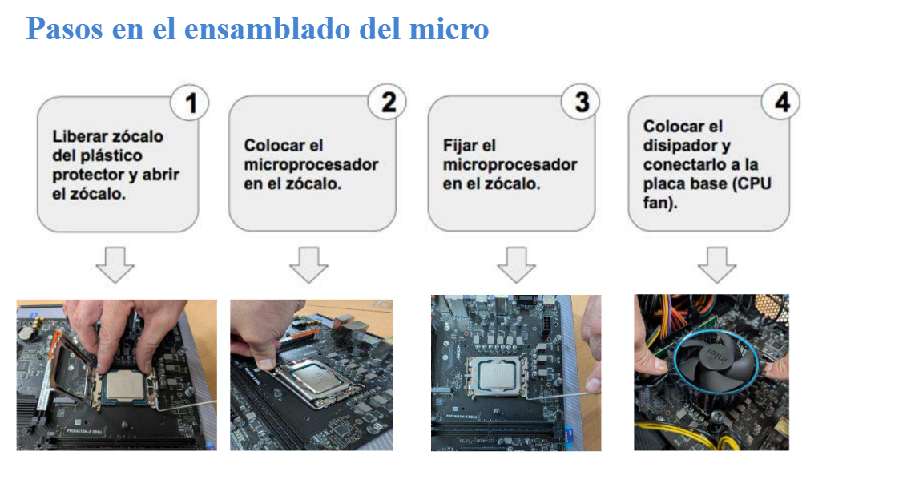
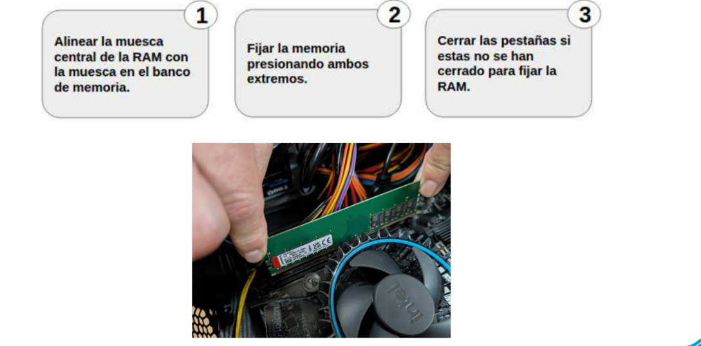
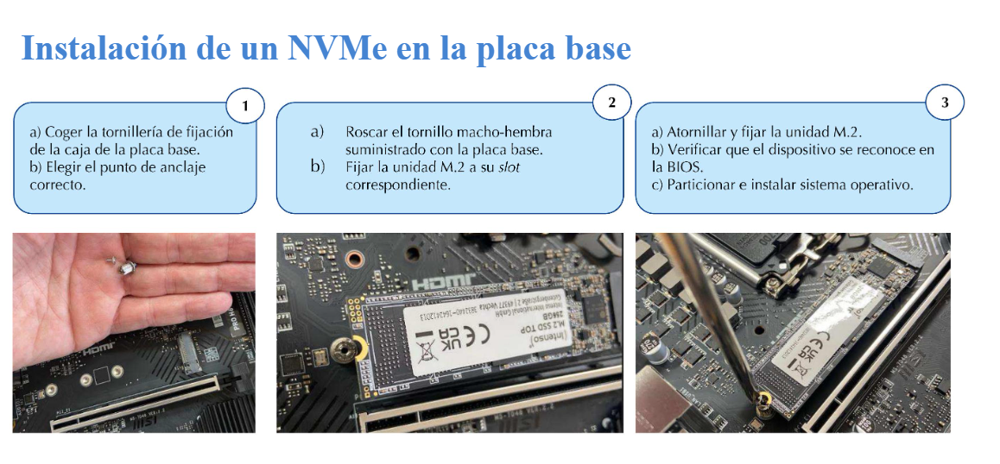
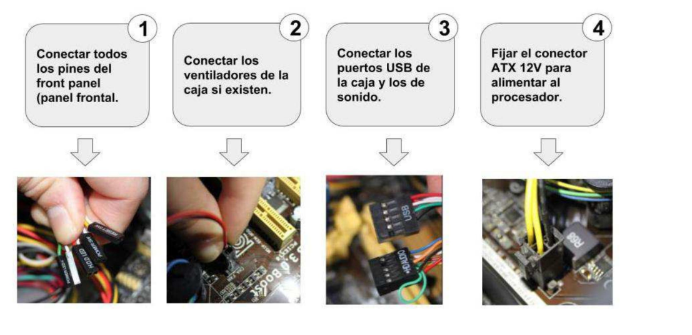
Revisión final y diagnóstico de arranque
La práctica termina cuando el equipo supera las comprobaciones, no cuando está simplemente cerrado.
Inspección sin tensión
Comprobaciones al encender
¿Qué hacer si no arranca?
No hace absolutamente nada al pulsar el botón
Revisar toma eléctrica, interruptor posterior de la fuente (si existe), ATX de 24 pines, EPS/ATX12V de CPU y conexión PWR_SW al encabezado correcto. Si persiste, consultar al profesor; no abrir la fuente.
Se enciende, pero no muestra imagen
Revisar conexión y entrada del monitor, alimentación adicional de GPU cuando corresponda, colocación de RAM y códigos LED/POST del fabricante. Verificar si la CPU dispone de gráficos integrados antes de usar la salida de vídeo de la placa.
Hay ventiladores, pero se apaga o reinicia
Comprobar sujeción del disipador, conexión CPU_FAN, alimentación de CPU y posibles cortocircuitos por separadores mal colocados. Detener la prueba ante olor, chispas o sobrecalentamiento.
El SSD o disco no aparece en UEFI/BIOS
Revisar cables SATA de datos y alimentación, compatibilidad del SSD M.2 con su ranura, fijación y opciones de firmware. Evitar inicializar o formatear unidades con datos.
Se escuchan pitidos o se enciende un LED de diagnóstico
Registrar secuencia exacta y modelo de placa. Los códigos POST y pitidos no son universales: interpretarlos con el manual del fabricante. El PDF incluye tablas históricas que sirven de contexto, pero no deben aplicarse indiscriminadamente a placas modernas.
Conceptos clave que debes dominar
ATX 24 pines frente a EPS/ATX12V
El conector principal alimenta la placa. El de CPU aporta alimentación al regulador del procesador. No confundir EPS de CPU con PCIe de GPU: pueden parecerse, pero no son intercambiables.
CPU, zócalo y refrigeración
La CPU solo encaja en una orientación. El disipador conduce el calor hacia el aire; la pasta térmica mejora el contacto. Es imprescindible fijarlo y conectar su ventilador según el modelo.
RAM y canales
DDR tiene generaciones y muescas diferentes. La memoria debe ser compatible con placa y CPU. Con dos módulos, las ranuras recomendadas aparecen en el manual, frecuentemente A2/B2.
SATA frente a M.2/NVMe
SATA es una interfaz habitual para HDD/SSD y utiliza cables de datos/alimentación. M.2 describe un formato físico; NVMe suele comunicarse por PCIe. No todo M.2 es NVMe.
Separadores de placa
Crean distancia entre placa y chasis metálico. Un separador extra bajo la placa, donde no hay orificio, puede producir un cortocircuito.
POST y UEFI
POST son verificaciones iniciales del hardware. UEFI/BIOS permite comprobar RAM, CPU, temperaturas, unidades reconocidas y opciones de arranque antes de cargar el sistema operativo.
Un mismo taller, dos generaciones de equipos
El documento PDF utiliza ejemplos de hardware clásico (IDE/PATA, AGP, jumpers, unidades ópticas y puertos antiguos), mientras que las diapositivas muestran SSD M.2 y conexiones más recientes. Conservamos ambos enfoques para aprender a distinguirlos: un equipo moderno no exige configurar jumpers IDE ni instalar AGP.
Cuestionario autocorregible
Selecciona una respuesta en cada pregunta y pulsa «Corregir». La corrección incluye una explicación técnica. No hay envío de datos al profesor.
Cuaderno de taller del alumno
Documenta el equipo real con el que has trabajado. El botón permite descargar un archivo de texto con tus notas y el avance de la práctica.
Inventario de componentes
Incidencias y dificultades
Conclusiones y verificaciones
Los campos y la lista de pasos se almacenan localmente en el navegador; si borras sus datos, pueden desaparecer. No se guardan fotografías ni se envía información a Internet.
Material empleado en la guía
Contenido basado en las 16 diapositivas aportadas y el PDF docente UT06 – Ensamblado de equipos informáticos (27 páginas): seguridad y ESD (págs. 1–3), herramientas (4–5), secuencia detallada de montaje (6–14) y códigos de error/POST (15–27). La secuencia completa de desmontaje es una ampliación didáctica elaborada para este taller, no una transcripción del PDF.
Se han aclarado procedimientos de seguridad y compatibilidades de hardware donde el material antiguo requería actualización o interpretación. Ante cualquier diferencia, prevalecen el protocolo de seguridad del centro y el manual del fabricante del equipo real.